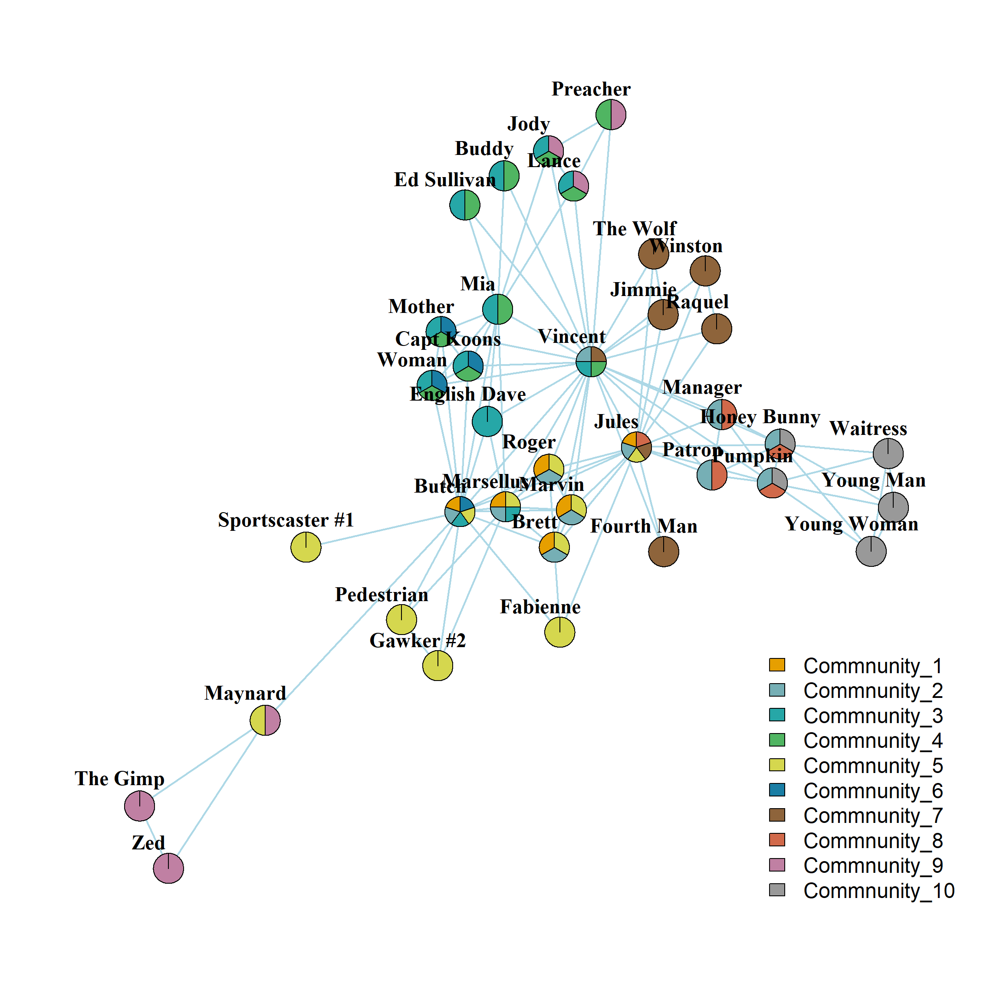

library(networkdata)
library(igraph)
library(stringr) #using stringr to change names from all caps to title case
g <- movie_559
V(g)$name <- str_to_title(V(g)$name)
V(g)$name[which(V(g)$name == "Esmarelda")] <- "Esmeralda" #fixing misspelled name
E(g)$weight <- 1 #setting edge weights to 1.0 (relevant for betweenness calculation)
g <- subgraph(g, which(degree(g) > 1))Using Edge Clustering to Assign Nodes to Overlapping Communities
We have examined various approaches to community and dense subgraph detection. What they all have in common is they assign nodes into non-overlapping groups. That is, nodes are either in one group or another but cannot belong to multiple groups at once. While this may make sense for a lot of substantive settings, it might not make sense for other ones, where multiple group memberships are normal (e.g., think of high school).
Detecting Overlapping Communities
Methodologically, overlapping community detection methods are not as well-developed as classical community detection methods. Here, we review one simple an intuitive approach that combines the idea of clustering nodes by computing a quantity on the links but instead of computing a rank order (like Newman and Girvan’s edge betweenness), we compute pairwise similarities between links. We then cluster the links using standard hierarchical clustering methods, which because nodes are incident to many links results in a multigroup clustering of the nodes for free. This approach is called link clustering (Ahn, Bagrow, and Lehmann 2010).
Let’s see how this works. We first load our trusty Pulp Fiction data set from the networkdata package, which is an undirected graph of character scene co-appearances in the film:
The key idea behind link clustering is that similar links should be assigned to the same clusters. How do we compute the similarity between links?
Measuring Edge Similarity
According to Ahn, Bagrow, and Lehmann (2010) two links \(e_{ik}\) and \(e_{jk}\) are similar if they share a node \(v_k\) and the other two nodes incident to each link (\(v_i, v_j\)) are themselves similar. To measure the similarity between this pair of nodes, we can use any of the off-the-shelf vertex similarity measures that we have seen in action (see lecture notes on local similarity metrics), like Jaccard, cosine, or Dice. Ahn, Bagrow, and Lehmann (2010) use the Jaccard, so that is what we will use.
The first step is thus to build a link by link similarity matrix based on this idea. The following function loops through each pair of links in the graph and computes the similarity between two links featuring a common node \(v_k\) based on the Jaccard vertex similarity of the two other nodes:
edge.sim <- function(h) {
E <- ecount(h) #number of edges
V <- vcount(h) #number of nodes
if(is.null(V(h)$name) == TRUE) {V(h)$name <- as.character(seq_len(V))} #checking if graph has node names
edgemat <- ends(h, E(h)) #edge list
E.sim <- diag(1, E, E) #initializing link similarity matrix to identity matrix
nlist <- lapply(V(h)$name, function(x) {c(as.vector(names(neighbors(h, x))), x)}) #neighbors list for each node
names(nlist) <- V(h)$name #naming neighbors list using graph node names
for (j in 2:E) {
for (i in 1:(j-1)) { #looping through upper triangle only
ei <- edgemat[i, ] #nodes incident to first edge
ej <- edgemat[j, ] #nodes incident to second edge
if (length(intersect(ei, ej)) != 0) { #do only if pair of edges share a node
v <- setdiff(union(ei, ej), intersect(ei, ej))#extracting nodes attached to shared node
n1 <- nlist[[v[1]]] #neighbors of first node
n2 <- nlist[[v[2]]] #neighbors of second node
E.sim[j, i] <- length(intersect(n1, n2)) / length(union(n1, n2)) #Jaccard similarity
E.sim[i, j] <- E.sim[j, i] #symmetric score
}
}
}
return(E.sim)
}The function takes the graph as input and returns an inter-link similarity matrix of dimensions \(E \times E\) where \(E\) is the number of edges in the graph. It works like this:
- In line 5, we extract the end nodes incident to each edge in the graph using the
igraphfunctionends(which creates an \(E \times 2\) matrix the nodes at end of the edges in one column and the nodes at the other end of the edges in the other column). - In line 6, we initialize the \(E \times E\) matrix of edge similarities to the identity matrix (all edges maximally similar to themselves and have initial similarity zero to other edges).
- Lines 7 and 8 create a
listobject callednlistusing thelapplyshortcut, containing the neighbors of each node in the graph as elements (including the ego node itself, the so-called inclusive neighborhood). - Then lines 9-21 enter a double
forloop that cycles through each pair of edges, determines whether they have a node in common (line 13) and calculates the Jaccard similarity between the neighborhoods of the other two nodes using the info stored in thenlistobject (lines 15-16), and fills that info into the edge similarity matrix (lines 17-18).
Here’s the function in action in the Pulp Fiction network:
[,1] [,2] [,3] [,4] [,5] [,6] [,7] [,8] [,9] [,10]
[1,] 1.000 0.636 0.636 0.321 0.000 0.000 0.647 0.000 0.000 0.000
[2,] 0.636 1.000 1.000 0.269 0.000 0.000 0.412 0.000 0.000 0.000
[3,] 0.636 1.000 1.000 0.269 0.000 0.000 0.412 0.000 0.000 0.000
[4,] 0.321 0.269 0.269 1.000 0.000 0.100 0.387 0.000 0.000 0.000
[5,] 0.000 0.000 0.000 0.000 1.000 0.462 0.000 0.000 0.000 0.000
[6,] 0.000 0.000 0.000 0.100 0.462 1.000 0.000 0.000 0.000 0.000
[7,] 0.647 0.412 0.412 0.387 0.000 0.000 1.000 0.167 0.200 0.471
[8,] 0.000 0.000 0.000 0.000 0.000 0.000 0.167 1.000 0.111 0.095
[9,] 0.000 0.000 0.000 0.000 0.000 0.000 0.200 0.111 1.000 0.105
[10,] 0.000 0.000 0.000 0.000 0.000 0.000 0.471 0.095 0.105 1.000We can then transform the link similarities into distances, and cluster them:
The resulting dendrogram looks like this:
The leaves of the dendrogram (bottom-most objects) represent each link in the graph (\(E = 102\) in this case), and the clusters are “link communities” (Ahn, Bagrow, and Lehmann 2010).
Clustering Nodes
As we noted, because it is the links that got clustered, the nodes incident to each link can go to more than one cluster (because nodes with degree \(k>1\) will be incident to multiple links).
We can then use the dendrogram information to return a list of node assignments to multiple communities. Let’s see the results with ten overlapping communities:
k <- 10
lc <- cutree(hc.res, k)
ld <- data.frame(as_edgelist(g), lc)
node.clus <- list()
for (k in 1:max(lc)) {
sub.dat <- dplyr::filter(ld, lc == k)
node.clus[[k]] <- unique(c(sub.dat[, 1], sub.dat[, 2]))
}
node.clus[[1]]
[1] "Brett" "Butch" "Jules" "Marsellus" "Marvin" "Roger"
[[2]]
[1] "Brett" "Butch" "Honey Bunny" "Jules" "Manager"
[6] "Marsellus" "Marvin" "Patron" "Pumpkin" "Roger"
[11] "Vincent"
[[3]]
[1] "Buddy" "Butch" "Jody" "Lance" "English Dave"
[6] "Capt Koons" "Ed Sullivan" "Marsellus" "Mia" "Mother"
[11] "Woman" "Vincent"
[[4]]
[1] "Buddy" "Lance" "Preacher" "Capt Koons" "Ed Sullivan"
[6] "Jody" "Mia" "Mother" "Vincent" "Woman"
[[5]]
[1] "Brett" "Butch" "Fabienne" "Gawker #2"
[5] "Marsellus" "Pedestrian" "Sportscaster #1" "Jules"
[9] "Marvin" "Maynard" "Roger"
[[6]]
[1] "Butch" "Capt Koons" "Mother" "Woman"
[[7]]
[1] "Fourth Man" "Jimmie" "Jules" "Raquel" "The Wolf"
[6] "Vincent" "Winston"
[[8]]
[1] "Honey Bunny" "Jules" "Manager" "Patron" "Pumpkin"
[[9]]
[1] "Jody" "Maynard" "Lance" "The Gimp" "Zed" "Preacher"
[[10]]
[1] "Honey Bunny" "Pumpkin" "Waitress" "Young Man" "Young Woman"Because there are nodes that belong to multiple communities, the resulting actor by community ties form a two-mode network (see here).
We can re-construct the bi-adjacency matrix corresponding to this two-mode network from the list of community memberships for each node like this:
B <- matrix(0, vcount(g), k)
rownames(B) <- V(g)$name
for (i in 1:k) {
B[node.clus[[i]], i] <- 1
}
B [,1] [,2] [,3] [,4] [,5] [,6] [,7] [,8] [,9] [,10]
Brett 1 1 0 0 1 0 0 0 0 0
Buddy 0 0 1 1 0 0 0 0 0 0
Butch 1 1 1 0 1 1 0 0 0 0
Capt Koons 0 0 1 1 0 1 0 0 0 0
Ed Sullivan 0 0 1 1 0 0 0 0 0 0
English Dave 0 0 1 0 0 0 0 0 0 0
Fabienne 0 0 0 0 1 0 0 0 0 0
Fourth Man 0 0 0 0 0 0 1 0 0 0
Gawker #2 0 0 0 0 1 0 0 0 0 0
Honey Bunny 0 1 0 0 0 0 0 1 0 1
Jimmie 0 0 0 0 0 0 1 0 0 0
Jody 0 0 1 1 0 0 0 0 1 0
Jules 1 1 0 0 1 0 1 1 0 0
Lance 0 0 1 1 0 0 0 0 1 0
Manager 0 1 0 0 0 0 0 1 0 0
Marsellus 1 1 1 0 1 0 0 0 0 0
Marvin 1 1 0 0 1 0 0 0 0 0
Maynard 0 0 0 0 1 0 0 0 1 0
Mia 0 0 1 1 0 0 0 0 0 0
Mother 0 0 1 1 0 1 0 0 0 0
Patron 0 1 0 0 0 0 0 1 0 0
Pedestrian 0 0 0 0 1 0 0 0 0 0
Preacher 0 0 0 1 0 0 0 0 1 0
Pumpkin 0 1 0 0 0 0 0 1 0 1
Raquel 0 0 0 0 0 0 1 0 0 0
Roger 1 1 0 0 1 0 0 0 0 0
Sportscaster #1 0 0 0 0 1 0 0 0 0 0
The Gimp 0 0 0 0 0 0 0 0 1 0
The Wolf 0 0 0 0 0 0 1 0 0 0
Vincent 0 1 1 1 0 0 1 0 0 0
Waitress 0 0 0 0 0 0 0 0 0 1
Winston 0 0 0 0 0 0 1 0 0 0
Woman 0 0 1 1 0 1 0 0 0 0
Young Man 0 0 0 0 0 0 0 0 0 1
Young Woman 0 0 0 0 0 0 0 0 0 1
Zed 0 0 0 0 0 0 0 0 1 0And the matrix of inter-community ties based on shared characters can be obtained via the usual Breiger (1974) projection:
[,1] [,2] [,3] [,4] [,5] [,6] [,7] [,8] [,9] [,10]
[1,] 6 6 2 0 6 1 1 1 0 0
[2,] 6 11 3 1 6 1 2 5 0 2
[3,] 2 3 12 9 2 4 1 0 2 0
[4,] 0 1 9 10 0 3 1 0 3 0
[5,] 6 6 2 0 11 1 1 1 1 0
[6,] 1 1 4 3 1 4 0 0 0 0
[7,] 1 2 1 1 1 0 7 1 0 0
[8,] 1 5 0 0 1 0 1 5 0 2
[9,] 0 0 2 3 1 0 0 0 6 0
[10,] 0 2 0 0 0 0 0 2 0 5And we can visualize the nodes connected to multiple communities as follows:

References
Ahn, Yong-Yeol, James P Bagrow, and Sune Lehmann. 2010. “Link Communities Reveal Multiscale Complexity in Networks.” Nature 466 (7307): 761–64.
Breiger, Ronald L. 1974. “The Duality of Persons and Groups.” Social Forces 53 (2): 181–90.